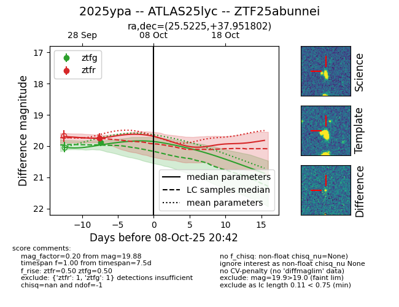
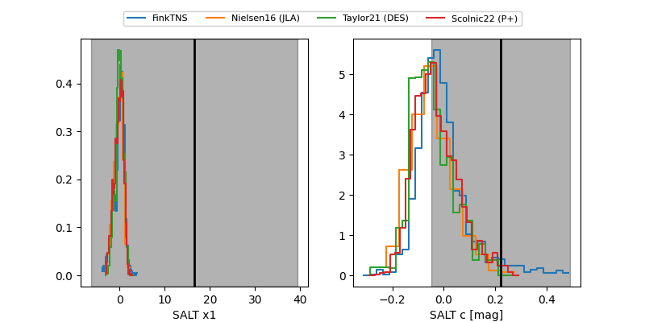

FINK: ZTF25abunnei
Lasair: ZTF25abunnei
ALeRCE: ZTF25abunnei
TNS: 2025ypa
YSE: 2025ypa
ZTF25abunnei (ztf,fink)
2025ypa (tns,yse)
ATLAS25lyc (atlas)
equatorial (ra, dec) = (25.5225,+37.95180)
galactic (l, b) = (133.8259,-23.84611)


last ztfg=19.88, ztfr=19.74
1 ztfg, 1 ztfr detections